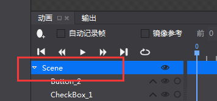
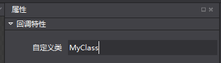
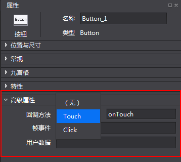

回调特性
现在可以直接在编辑器里边指定某个控件的事件的处理函数。
不再需要一个一个去get控件啦。也不再需要因为修改了控件名或者其他属性后，就得去改程序了。
以下分别提供C++,Lua如何使用callback方法。
C++：
1，在编辑器点击根节点，如下图：

2，在高级属性->回调特性->自定义类 添加类名，比如MyClass，如图：

3，选中想要设置回调特性的控件，进入高级属性->回调特性->回调方法，选择接受的回调类型以及输入回调方法名称：
如：Touch方法，名称为onTouch：

4，在C++中，创建一个自己的自定义类：
这个类必须遵循如下要求：
a.继承WidgetCallBackHandlerProtocol和Node(或其他继承自Node的类)
b.重写如下接口：
onLocateTouchCallback
onLocateClickCallback
onLocateEventCallback
返回对Touch,Click,Event三种事件的处理函数。（可以只重写你使用到的回调类型）。
如： //.h file
#ifndef __TestCpp__MyClass__
#define __TestCpp__MyClass__
#include "cocos2d.h"
#include "cocostudio/CocoStudio.h"
#include "cocostudio/WidgetCallBackHandlerProtocol.h"
class MyClass : public cocos2d::Node, public cocostudio::WidgetCallBackHandlerProtocol
{
public:
CREATE_FUNC(MyClass)
MyClass();
virtual cocos2d::ui::Widget::ccWidgetTouchCallback
onLocateTouchCallback(const std::string &callBackName);
virtual cocos2d::ui::Widget::ccWidgetClickCallback
onLocateClickCallback(const std::string &callBackName);
virtual cocos2d::ui::Widget::ccWidgetEventCallback
onLocateEventCallback(const std::string &callBackName);
void onTouch(cocos2d::Ref* sender, cocos2d::ui::Widget::TouchEventType type);
void onClick(cocos2d::Ref* sender);
void onEvent(cocos2d::Ref* sender, int eventType);
private:
std::vector<std::string> _touchTypes;
std::string _click;
std::vector<std::string> _eventTypes;
};
//.cpp file
#include "MyClass.h"
#include "ui/UIText.h"
USING_NS_CC;
using namespace std;
using namespace cocos2d::ui;
MyClass::MyClass()
{}
Widget::ccWidgetTouchCallback MyClass::onLocateTouchCallback(const string &callBackName)
{
if (callBackName == "onTouch")//判断事件名，返回对应的函数。下同
{
return CC_CALLBACK_2(MyClass::onTouch, this);
}
return nullptr;
}
Widget::ccWidgetClickCallback MyClass::onLocateClickCallback(const string &callBackName)
{
if (callBackName == "onClick")
{
return CC_CALLBACK_1(MyClass::onClick, this);
}
return nullptr;
}
Widget::ccWidgetEventCallback MyClass::onLocateEventCallback(const string &callBackName)
{
if (callBackName == "onEvent")
{
return CC_CALLBACK_2(MyClass::onEvent, this);
}
return nullptr;
}
void MyClass::onTouch(cocos2d::Ref* object, cocos2d::ui::Widget::TouchEventType type)
{
CCLOG("onTouch");
}
void MyClass::onClick(cocos2d::Ref* sender)
{
CCLOG("onClick");
}
void MyClass::onEvent(cocos2d::Ref* sender, int eventType)
{
CCLOG("onEvent");
}
4，为第3步编写的类创建工厂类：
这个类必须继承cocostudio::NodeReader，并重写如下三个接口
getInstance —— 返回工厂类的单例
purge —— 销毁工厂类
createNodeWithFlatBuffers —— 创建第3步编写的类，并调用setPropsWithFlatBuffers
如：
//.h file
#ifndef __cocos2d_libs__MyClassReader__
#define __cocos2d_libs__MyClassReader__
#include "cocos2d.h"
#include "cocostudio/CocosStudioExport.h"
#include "cocostudio/WidgetReader/NodeReader/NodeReader.h"
class MyClassReader : public cocostudio::NodeReader
{
public:
MyClassReader() {};
~MyClassReader() {};
static MyClassReader* getInstance();
static void purge();
cocos2d::Node* createNodeWithFlatBuffers(const flatbuffers::Table* nodeOptions);
};
#endif /*defined(__cocos2d_libs__MyClassReader__) */
//.cpp file
#include "MyClassReader.h"
#include "MyClass.h"
USING_NS_CC;
static MyClassReader* _instanceMyClassReader = nullptr;
MyClassReader* MyClassReader::getInstance()
{
if (!_instanceMyClassReader)
{
_instanceMyClassReader = new MyClassReader();
}
return _instanceMyClassReader;
}
void MyClassReader::purge()
{
CC_SAFE_DELETE(_instanceMyClassReader);
}
Node* MyClassReader::createNodeWithFlatBuffers(const flatbuffers::Table *nodeOptions)
{
MyClass* node = MyClass::create();
setPropsWithFlatBuffers(node, nodeOptions);
return node;
}
5，在加载节点之前注册这个接口到CSLoader中
CSLoader* instance = CSLoader::getInstance();
//注意第一个参数必须是第一步填写的自定义类名加“Reader ”如上述的"MyClassReader"
instance->registReaderObject("MyClassReader",(ObjectFactory::Instance)MyClassReader::getInstance);
6，使用CreateNode加载你的节点，因为你的自定义类的create已经委托给工厂类，只要你注册工厂类的时候没写错，工厂类会在createNode里边create你的自定义类并调用onLocateTouchCallback，onLocateClickCallback，onLocateEventCallback实现代码回调与编辑器的绑定。
Lua：
参考启动器教程页《Cocos如何绑定Lua自定义类》。
扫描二维码或在微信中搜索 KeepMovingXin